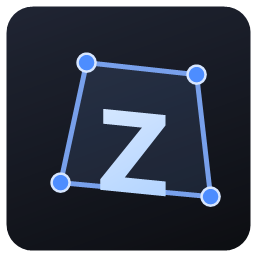
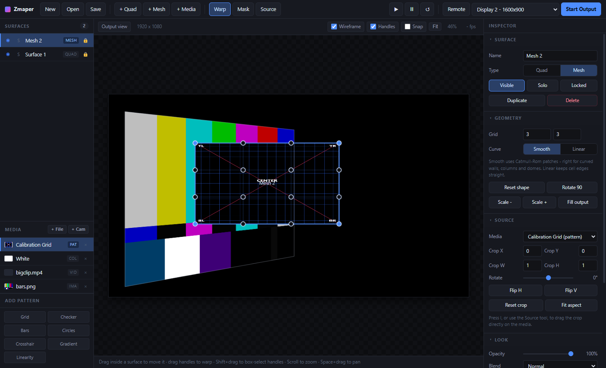

Warp video, images and live camera onto real objects. Quad and mesh surfaces, polygon masks, soft edge blending, and a phone remote so you can map while standing at the wall instead of hunched over the laptop.
Windows 10/11, 64-bit. The build is unsigned, so Windows shows a SmartScreen warning on first launch — choose More info then Run anyway.

Everything you need to line a projector up with a real object and keep it there.
Four corners, full keystone. A true projective homography, so the image stays perspective-correct no matter how hard you skew it — right for flat panels, screens and walls.
An n×m control grid interpolated as Catmull-Rom patches, which is what makes curved walls, columns, cylinders and domes land properly. Change the grid density any time without losing your shape.
Draw polygon masks with feathering. They live in the surface's own coordinate space, so a mask stays locked to the surface however much you keep warping it.
Per-edge feathering with an adjustable blend gamma, so two overlapping projectors sum to a flat field instead of a bright seam down the middle.
Video, stills, live webcam, solid colours, and built-in calibration patterns — a labelled grid, colour bars, linearity squares and more. Drag files straight onto a surface.
A borderless fullscreen window on the display you choose, with no chrome and no handles. It owns its own playback, so nothing in the editor can stall the projection.
Mapping is otherwise a two-person job: one at the laptop, one at the wall. Press Remote, scan the QR code with a phone on the same Wi-Fi, and drag the corners with your thumbs while looking at the actual projection.
| Q / M | Add quad / mesh surface |
| V | Warp tool |
| K | Mask tool |
| I | Source crop tool |
| F | Fit view |
| Arrows | Nudge (Shift ×10, Alt sub-pixel) |
| Ctrl+Z | Undo |
What it is not, so you can judge before downloading.
Built and tested on Windows 10/11 x64. The code is Electron and WebGL2, so macOS and Linux builds are a packaging change rather than a rewrite — they just have not been made or tested.
Multi-projector today means one machine per projector, or one wide output spanning several via the GPU. There is no Spout, NDI, DMX or audio reactivity.
H.264 MP4, WebM, MOV and OGV decode; HEVC/H.265 does not. A clip that cannot be decoded is flagged in red in the media list rather than failing silently.